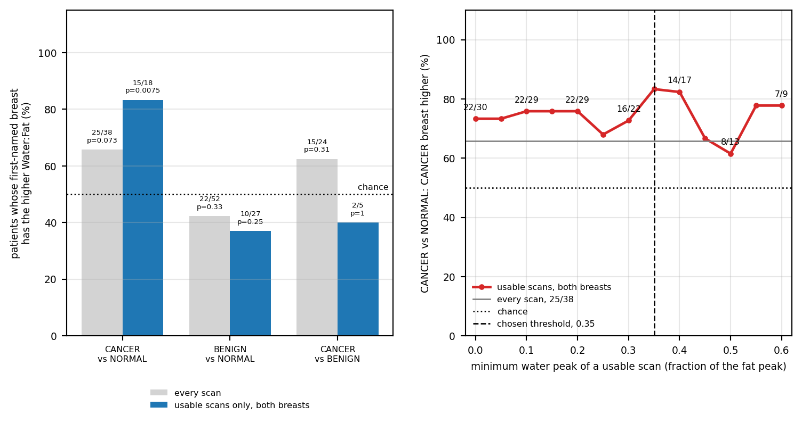

Code
SMOOTH = np.round(np.arange(0, 0.601, 0.05), 2) # thresholds for the sensitivity curve; above 0.6 too few patients are left
sensitivity = {t: rule_results(t, CENTRE_MIN)["CANCER vs NORMAL"] for t in SMOOTH}
def plot_sensitivity(ax, by_threshold, every_scan):
"""The CANCER vs NORMAL share against the threshold, with the number of patients written at every 0.1."""
ts = np.array(list(by_threshold))
shares = [100 * h / n if n else np.nan for h, n, _ in by_threshold.values()]
ax.plot(ts, shares, color=ne.STATUS_COLOURS["CANCER"], lw=1.8, marker="o", ms=3, label="usable scans, both breasts")
for t, (h, n, _) in by_threshold.items():
if n and round(t * 10) == t * 10:
ax.text(t, 100 * h / n + 3, f"{h}/{n}", ha="center", fontsize=6)
h, n, _ = every_scan
ax.axhline(100 * h / n, color="grey", lw=1, label=f"every scan, {h}/{n}")
ax.axhline(50, color="black", ls=":", lw=1, label="chance")
ax.axvline(WATER_MIN, color="black", ls="--", lw=1, label=f"chosen threshold, {WATER_MIN:g}")
ax.set(xlabel="minimum water peak of a usable scan (fraction of the fat peak)", ylabel="CANCER vs NORMAL: CANCER breast higher (%)",
ylim=(0, 110), xlim=(-0.02, SMOOTH[-1] + 0.02))
ax.grid(alpha=0.3)
ax.legend(frameon=False, loc="lower left", fontsize=6)
plt.rcParams["font.size"] = 7 # small text so both panels fit side by side on an A4 page
fig, (bar_ax, sens_ax) = plt.subplots(1, 2, figsize=(8, 4))
for ax in (bar_ax, sens_ax):
ax.set_box_aspect(1) # square panels
width = 0.38
for k, comparison in enumerate(COMPARISONS):
for offset, results, colour, name in ((-width / 2, all_scans_results, "lightgrey", "every scan"),
(width / 2, rule, TOP_COLOUR, "usable scans only, both breasts")):
higher, total, p_value = results[comparison]
if not total:
continue
bar_ax.bar(k + offset, 100 * higher / total, width=width, color=colour, label=name if k == 0 else None)
bar_ax.text(k + offset, 100 * higher / total + 2, f"{higher}/{total}\np={p_value:.2g}", ha="center", va="bottom", fontsize=5)
bar_ax.axhline(50, color="black", ls=":", lw=1)
bar_ax.text(len(COMPARISONS) - 0.5, 51, "chance ", ha="right", va="bottom", fontsize=6)
bar_ax.set(xticks=range(len(COMPARISONS)), ylim=(0, 115), yticks=range(0, 101, 20),
ylabel="patients whose first-named breast\nhas the higher Water:Fat (%)")
bar_ax.set_xticklabels([c.replace(" vs ", "\nvs ") for c in COMPARISONS], fontsize=6)
bar_ax.grid(alpha=0.3, axis="y")
bar_ax.legend(frameon=False, loc="upper center", bbox_to_anchor=(0.5, -0.14), ncols=1, fontsize=6)
plot_sensitivity(sens_ax, sensitivity, all_scans_results["CANCER vs NORMAL"])
fig.tight_layout()
plt.show()
plt.rcParams["font.size"] = 10